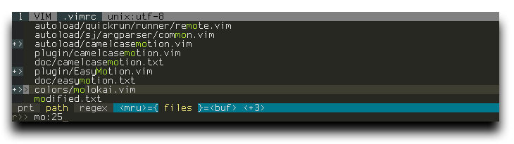

Full path fuzzy file, buffer and MRU file finder for Vim.
- » Written in pure Vimscript for MacVim and Vim 7.0+.
- » Full support for Vim’s regexp as search pattern.
- » Built-in Most Recently Used (MRU) files monitoring and search.
- » Built-in root directory finder.
- » Execute Ex-commands on an opening file.
- » Multiple files opening.
- » Automatically create non-existed file and directories.
- » Cross-sessions caching and history allow for lightning fast start-up.
- » Strictly conform to Vim’s methods and conventions.
Screenshot: CtrlP in regex and full path mode with 3 files selected to open.

Basic Usage:
- Press
<c-p>or run:CtrlPor:CtrlP [starting-directory]to invoke CtrlP.
Once CtrlP is open:
- Press
<c-f>and<c-b>to switch between find file, buffer, and MRU file modes. - Press
<c-d>to switch to filename only search instead of full path. - Use
*or|in the prompt to submit the string as a Vim’s regexp pattern. - Or press
<c-r>to switch to full regexp search mode. - End the input string with a colon
:followed by a command to execute after opening the file:
abc:45will open the selected file and jump to line 45.
abc:/my\:functionwill open the selected file and jump to the first instance of 'my:function'.
abc:+setf\ myfiletype|50will open the selected file and set its filetype to 'myfiletype' then jump to line 50. - Submit two dots
..as the input string to go backward the directory tree by 1 level. - Use
<c-n>,<c-p>to go to the next/prev string in the prompt’s history. - Use
<c-y>to create a new file and its parent dirs. - Use
<c-z>to mark/unmark files and<c-o>to open marked files.
Basic Options:
-
Change the mapping to invoke CtrlP:
let g:ctrlp_map = '<c-p>' -
When CtrlP is invoked, it automatically sets the working directory according to this variable:
0 - don’t manage working directory.let g:ctrlp_working_path_mode = 1
1 - the parent directory of the current file.
2 - the nearest ancestor that contains one of these directories or files:.git/ .hg/ .bzr/ _darcs/ root.dir .vimprojects -
You can also use the set-working-directory functionality outside of CtrlP by adding the following line to your vimrc.
The parameter is the same (0, 1 or 2):
au BufEnter * cal ctrlp#SetWorkingPath(2) -
If you want to exclude directories or files from the search, you can use the Vim’s option 'wildignore'.
e.g. Just have something like this in your vimrc:
set wildignore+=*/.git/*,*/.hg/*,*/.svn/*,*.so " Linux/MacOSX set wildignore+=.git\*,.hg\*,.svn\*,*.dll,*.exe " Windows -
Specify an external tool to use for listing files instead of using Vim’s globpath().
Use %s in place of the target directory:
let g:ctrlp_user_command = 'find %s -type f' " MacOSX/Linux let g:ctrlp_user_command = 'dir %s /-n /b /s /a-d' " Windowslet g:ctrlp_user_command = ['.git/', 'cd %s && git ls-files'] let g:ctrlp_user_command = ['.hg/', 'hg --cwd %s locate --fullpath -I .']
Run :help ctrlp or submit ? in ctrlp for more mappings, commands and options.
Get ctrlp.vim:
DownloadFrom elsewhere:
$ git clone https://github.com/kien/ctrlp.vim.git$ hg clone https://bitbucket.org/kien/ctrlp.vim- ctrlp.vim on vim.org